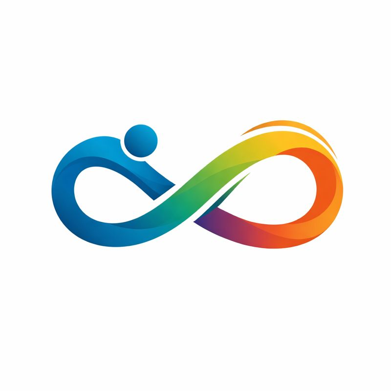

Suggested Name Changes
Action-Oriented & Modern
- Fluid Motion Foundation
- Realign Neuro Foundation
- Kinetic Synergy Foundation
Why these names work: They sound modern and credible & They allow expansion into research, community support, and education.
Hope & Empowerment Focused
- Graceful Movement Collective
- The Unshaken Foundation
- Momentum Care Group
Why these names work: They acknowledge stuggle without sounding medical or depressing & They support our community sharing and volunteer stories sections.
Scientific & Research-Focused
- Motor Control Research Trust
- The NeuroKinetic Alliance
- Pathways Neurological Foundation
Why these names work: They fit a diet that includes research, medical discussion, and assessmet tools.
Descriptive & Inclusive
- The Movement & Balance Foundation
- Coordination Care Network
- Foundation for Motor Well-being
Why these names work: They're easy to understand immediately & They include tremors, dystonia, Pakinsonian conditions and other movement disorders.
Short & Impactful
- Motus Collective (Latin for movement)
- SteadyMind Foundation
- NeuroSync
Why these names work: They are short names that are easier for branding, domains, and logos.
Top 5 Overall (Best for Our Mission)
- The Unshaken Foundation
- Fluid Motion Foundation
- Motus Collective
- The NeuroKinetic Alliance
- SteadyMind Foundation
Why these names work: These balance strength, compassion, credibility, and memorability.
Suggested Movement and Unity Logo Collection:
Infinity Symbol With Human Figure Design
